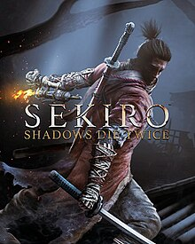

- Year: 2019
- Genre: Action, Adventure, Souls-like
- Developer: FromSoftware
- Platforms: PC, PlayStation 4, Xbox One
- Awards: Game of the Year (GOTY) 2019
About the Game
Sekiro: Shadows Die Twice is an action-adventure game developed by FromSoftware. Players take on the role of a shinobi warrior on a quest to rescue his kidnapped lord in a brutal, fast-paced game that tests reflexes and precision.
Key Features
- Precision Combat: A focus on timing, parrying, and posture-breaking in combat.
- Stealth Gameplay: Use stealth to eliminate enemies and gain the upper hand.
- Prosthetic Tools: Equip and upgrade a variety of tools to enhance combat and exploration.
- Challenging Difficulty: A high level of difficulty that rewards skill and perseverance.
- Japanese Setting: A beautifully crafted world inspired by feudal Japan.
Why It Won GOTY 2019
- Innovative Combat: The game's combat system was praised for its depth and challenge.
- Artistic Design: The game's visuals and world design were widely acclaimed.
- Cultural Authenticity: The game's setting and themes resonated with players.
- Critical Acclaim: Sekiro received universal praise for its gameplay and design.
- Impact on the Genre: The game set a new standard for action-adventure games.